First, we need to load and merge the dataset into one.Then we preprocess the data by removing stop words, punctuation and other unwanted characters for make the dataframe more accurater for further processing.After preprocesssing the dataframe then, we will divide the dataset into three parts: training, development, and test sets. First divide the dataset equally for that 60 percent data for training and 20 percent each for development and for testing.This how the dataframe is divided into three parts
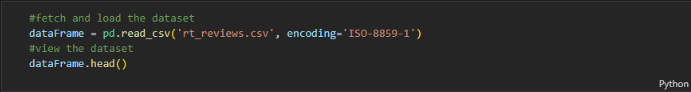 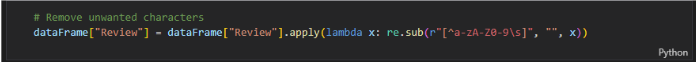 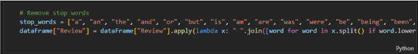 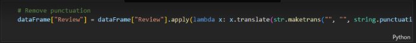 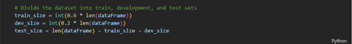 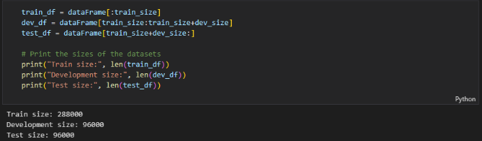Now we build a vocabulary of all the words in the training set, omitting rare words with frequency less than five. A reverse index dictionary will be created, mapping each word to a unique integer value.
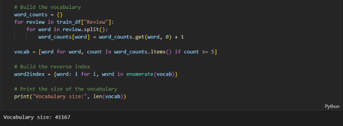We calculate the probability of the occurrence of each word in the training set. Conditional probability based on the sentiment will also be calculated. Smoothing can be applied to prevent zero probabilities when a word is not present in a particular class.Lets view the probabilities of first 10 words in the vocubulary.
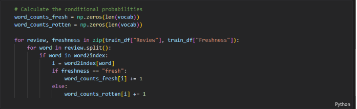 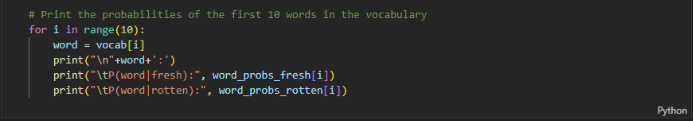 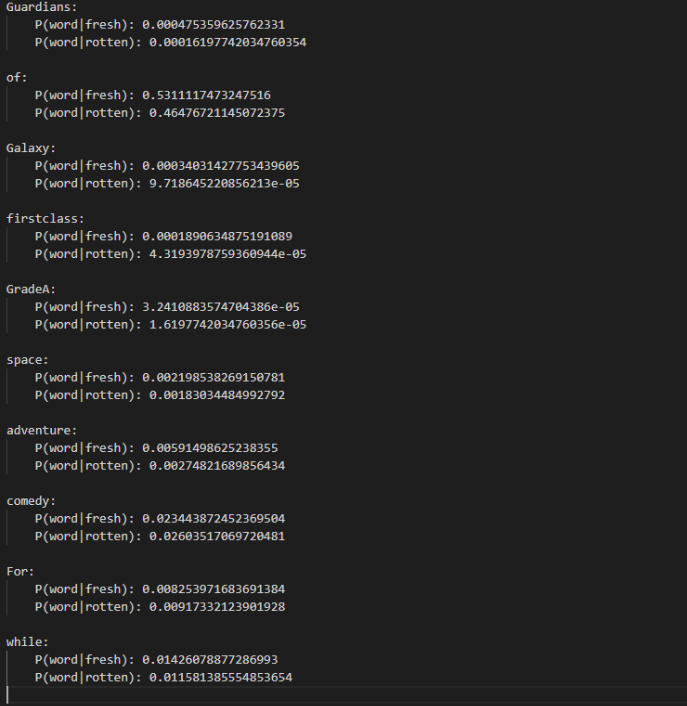This code defines a function called classify that takes in a review and a boolean flag smoothing, which indicates whether to apply smoothing or not. The function uses Naive Bayes algorithm to classify the review as either "fresh" or "rotten" based on the words present in the review. If smoothing is set to True, smoothing is applied to the probabilities of words in the reviews. Otherwise, no smoothing is applied. The function first calculates the prior probabilities for "fresh" and "rotten" reviews, based on the number of reviews that are labeled as "fresh" and "rotten" in the training set Finally, the function compares the probability of the review being "fresh" to the probability of the review being "rotten". If the probability of the review being "fresh" is greater than the probability of the review being "rotten", the function returns "fresh". Otherwise, it returns "rotten".
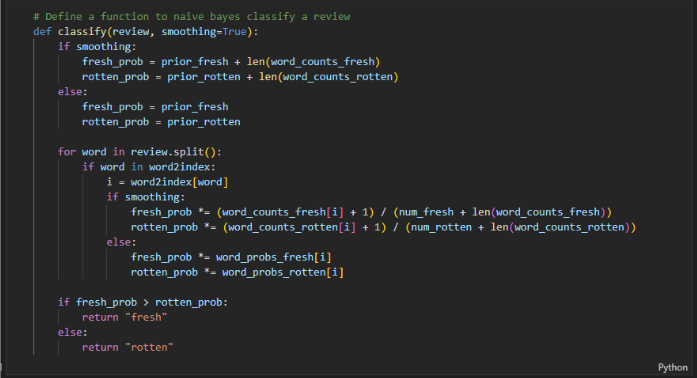The model will make predictions on the development set. Accuracy is calculated to evaluate the performance of the model.
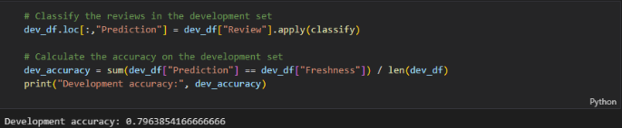We will experiment with different values of smoothing parameters and evaluate their impact on model performance.We derive the top 10 words that predict each class.We then calculate P[class | word] for each word in the vocabulary.
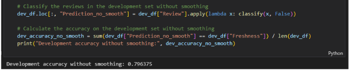 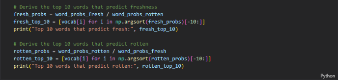 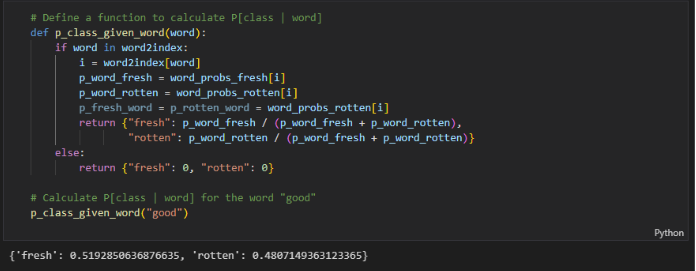The model is evaluated on the test set using the optimal hyperparameters selected based on the development set.
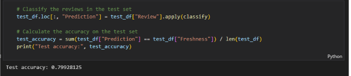